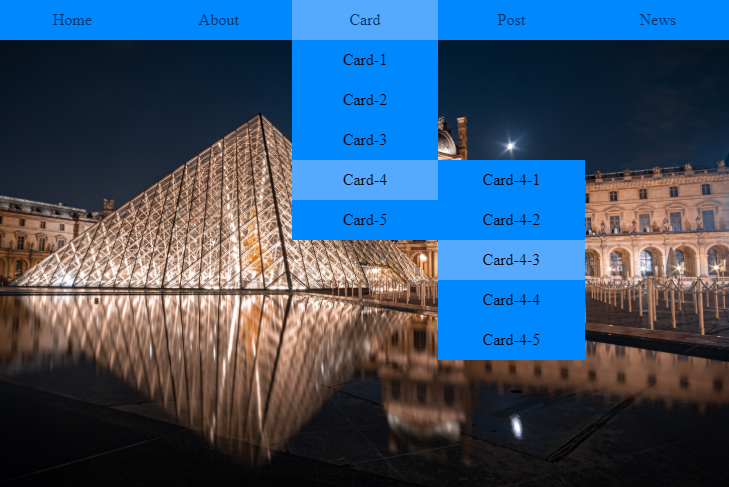
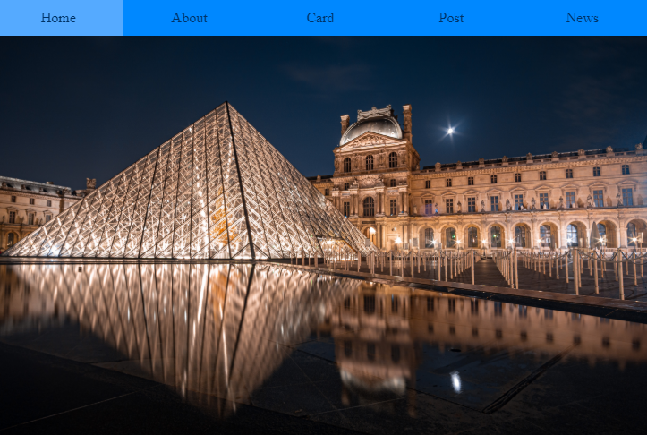
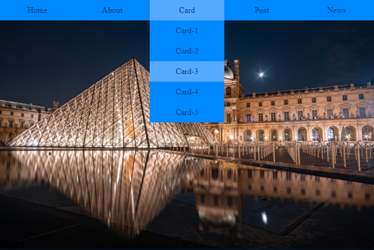

簡介
利用 CSS 的 display:none 和 display: block 做出的選單效果

單層選單
先用 UL 、 LI 建立選單
1
2
3
4
5
6
7
| <ul>
<li>Home</li>
<li>About</li>
<li>Card</li>
<li>Post</li>
<li>News</li>
</ul>
|
CSS 樣式
1
2
3
4
5
6
7
8
9
10
11
12
13
14
| ul li {
float: left;
width: 20%;
height: 40px;
line-height: 40px;
text-align: center;
color: #036;
background-color: #08f;
}
ul li:hover {
background-color: #5af;
}
|
就會產生下方的效果

產生向下一層的選單
在 Card 的 LI 內建立新的 UL 、 LI
1
2
3
4
5
6
7
8
9
| <li>Card
<ul>
<li>Card-1</li>
<li>Card-2</li>
<li>Card-3</li>
<li>Card-4</li>
<li>Card-5</li>
</ul>
</li>
|
CSS 樣式
先 display 隱藏下一層的 UL 選單
1
2
3
| ul li ul li {
display: none;
}
|
滑到內部有包著 UL 選單的 LI 時再打開
因為上一層的 UL 設為横式選單
所以當下一層選單要改垂直時需要改為行內元素
1
2
3
4
5
| ul li:hover ul li {
display: block;
float: none;
width: 100%;
}
|
這裡 LI 的寬會沿用上一層的 LI 設定 width: 20% 會再被分割五等份
所以要改成和上一層的 LI 同寬 width: 100%
同樣的在不修改滑鼠滑入效果時就會沿用上一層的設定
就會產生像下圖的效果

向下二層的選單
一樣在 LI 內建立新的 UL 、 LI
1
2
3
4
5
6
7
8
9
| <li>Card-4
<ul>
<li>Card-4-1</li>
<li>Card-4-2</li>
<li>Card-4-3</li>
<li>Card-4-4</li>
<li>Card-4-5</li>
</ul>
</li>
|
CSS 樣式
因為都是用 UL 的列表一層一層產生
及 LI 都是沿用上層的格式
所以就只需要修改移動的位置就能產生效果了
1
2
3
4
5
6
7
8
9
10
11
12
13
| ul ul ul{
display:none
}
ul ul li:hover ul {
display: block;
}
ul ul li:hover ul li {
position: relative;
top: -40px;
left: 100%;
}
|